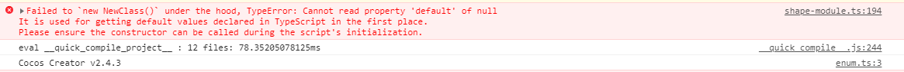

CONTENT OULINE
新手上路，请注意避让！
现场感悟
2020/12/25
这是一个相对成熟的游戏引擎（？），也是，可能比其他的好很多，但是毕竟是人烟稀少的土地，遇到的问题轻则头疼绕道，重则直接嗝屁，都是巴戈，真想口吐芬芳
2021/1/19
真的是吐了，这个游戏引擎莫名其妙出现巴戈，然后莫名其妙地重启之后消失，有咩有考虑过，中间的这个过程让宝宝好痛苦，绝对是一种被玩弄的感觉。
而且，出现巴戈的 sourceMap 提示根本没有办法溯源，去搜索相应的报错信息也是一无所获，这个社区真的可以说没有！再做两三个游戏就塞Goodbye了.
记住，出现异常报错之后：先重启，先重启，先重启引擎！！！

2021/1/22
针对异常的报错，可以排查是否出现如下的问题：
- 重启引擎能否解决
- 在某个节点上，是否绑定了正确的脚本
翻车现场
copy一波官方文档，说实话，官方文档写的很接地气，但是总有一些坑，让我掉进去了-_-总之，下面是官方文档的补充坑点
一、缓动系统
链式 API
cc.tween 的每一个 API 都会在内部生成一个 action，并将这个 action 添加到内部队列中，在 API 调用完后会再返回自身实例，这样就可以通过链式调用的方式来组织代码。
cc.tween 在调用 start 时会将之前生成的 action 队列重新组合生成一个 cc.sequence 队列，所以 cc.tween 的链式结构是依次执行每一个 API 的，也就是会执行完一个 API 再执行下一个 API。
1 | cc.tween(this.node) |
设置缓动属性
cc.tween 提供了两个设置属性的 API：
to：对属性进行绝对值计算，最终的运行结果即是设置的属性值，即改变到某个值。by：对属性进行相对值计算，最终的运行结果是设置的属性值加上开始运行时节点的属性值，即变化值。
1 | cc.tween(node) |
支持缓动任意对象的任意属性
1 | let obj = { a: 0 } |
同时执行多个属性
1 | cc.tween(this.node) |
easing
你可以使用 easing 来使缓动更生动，cc.tween 针对不同的情况提供了多种使用方式。
1 | // 传入 easing 名字，直接使用内置 easing 函数 |
Easing 类型说明可参考 API 文档。
自定义 progress
相对于 easing，自定义 progress 函数可以更自由的控制缓动的过程。
1 | // 对所有属性自定义 progress |
复制缓动
clone 函数会克隆一个当前的缓动，并接受一个 target 作为参数。
1 | // 先创建一个缓动作为模板 |
插入其他的缓动到队列中
你可以事先创建一些固定的缓动，然后通过组合这些缓动形成新的缓动来减少代码的编写。
1 | let scale = cc.tween().to(1, { scale: 2 }) |
并行执行缓动
cc.tween 在链式执行时是按照 sequence 的方式来执行的，但是在编写复杂缓动的时候可能会需要同时并行执行多个队列，cc.tween提供了 parallel 接口来满足这个需求。
1 | let t = cc.tween; |
回调
1 | cc.tween(this.node) |
重复执行
repeat/repeatForever 函数会将 前一个 action 作为作用对象。但是如果有参数提供了其他的 action 或者 tween，则 repeat/repeatForever 函数会将传入的 action 或者 tween 作为作用对象。
1 | cc.tween(this.node) |
延迟执行
1 | cc.tween(this.node) |
二、定时器
首先，先创建一个指向某个组件的变量，变量名为 component。
其中 component 属于
1、开始一个计时器
1 | component.schedule(function() { |
上面这个计时器将每隔 5s 执行一次。
2、更灵活的计时器
1 | // 以秒为单位的时间间隔 |
上面的计时器将在 10 秒后开始计时，每 5 秒执行一次回调，执行 3 + 1 次。
3、只执行一次的计时器（快捷方式）
1 | component.scheduleOnce(function() { |
上面的计时器将在两秒后执行一次回调函数，之后就停止计时。
4、取消计时器
开发者可以使用回调函数本身来取消计时器：
1 | this.count = 0; |
注意：组件的计时器调用回调时，会将回调的 this 指定为组件本身，因此回调中可以直接使用 this。
下面是 Component 中所有关于计时器的函数：
schedule：开始一个计时器scheduleOnce：开始一个只执行一次的计时器unschedule：取消一个计时器unscheduleAllCallbacks：取消这个组件的所有计时器
这些 API 的详细描述都可以在 Component API 文档中找到。
除此之外，如果需要每一帧都执行一个函数，请直接在 Component 中添加 update 函数，这个函数将默认被每帧调用，这在 生命周期文档 中有详细描述。
注意：cc.Node 不包含计时器相关 API
冷知识
1、构建时的参数含义
MD5 cache：使用creator构建web平台时为了使用玩家可以及时更新修改，可以使用MD5 cache功能，便会在构建出来的文件名称中加上 md5 值。
值得注意的是，若使用 build-templates，需要保证不带 MD5 值，因为在模板 index.js 中把 mian.js 路径和名称是写死的。
2、 加载远程资源
官方文档 中是这样说的
查找了相关动态加载的文档如下：
Cocos Creator 资源管理AssetManager
细谈cocos中sprite、texture和SpriteFrame
本人在使用过程中，
vscode一直报错，后来功能却可以正常是实现
1 | // 远程 url 带图片后缀名 |
个人的需求：
加载远程 url 不带图片后缀名，获取图片之后动态替换原图片
但是，如果远程 url 带图片后缀，绝对不可再次声明图片后缀
1 | cc.assetManager.loadRemote(res['couponQRCode'], {ext: '.png'}, (err, texture) => { |